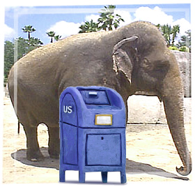

B. shave all you hair off with shears! this is important i explain later.
C. cut you finger nails off with wire crutter plier.
F. cut self with scissor and bled on ground
l- urinates on ground
k:) dance around money singing santa is coming to town
w: steal money and leave nation and erase identity off face of planet
ok so maybe you wondering why to leave all evidence of you being in bank???? simple: best wayr to hide something is in most likely location! whagt better place to leave evidence than directlys at crime scene ??? here is image for proof (i am 105% certains you will never find elephant):

believe it or not elephant is BEHIND MAIL BOX! this concludes section